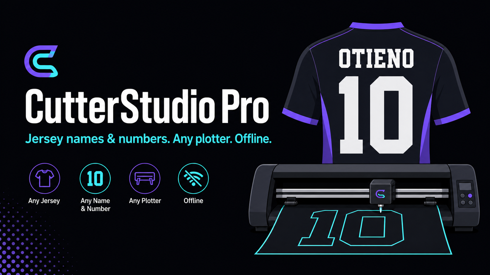

Vinyl cutter software · Windows + Linux · any plotter
The cutter studio shops open when Cricut and Silhouette will not do the job.
Paste a football or school roster. Names and numbers land at real jersey millimetres. Mirror for HTV, split colours, quote vinyl in KES, send HPGL to a cheap Graphtec / Roland / Chinese plotter. Offline. No subscription.

Who this is for
Football / rugby jersey shops
15–30 names a week. Back 250 mm, chest 125 mm, name 65 mm. CSV in, two vinyl colours out.
School PE / house kits
Youth and adult mixed. Fast turnaround on cheap HTV. No per-font subscription.
Custom t-shirt kiosks
Logo background remove + silhouette cut path. Mirror for press. Weed box.
Staff / corporate tees
50–500 names, one brand colour. Linux shops are not locked out.
Why search engines and shops should treat this as the parallel product
YouTube ranks because the web can read every video title. Cricut Design Space is a cloud app with almost no public, factual pages about roster-to-cut. This site is the opposite: every claim is HTML a crawler can parse, with schema, a sitemap, and an llms.txt for AI search.
| Fact | Value |
|---|---|
| Product | CutterStudio Pro (aisac) |
| Category | Vinyl cutter and plotter software |
| Platforms | Windows, Linux, browser studio |
| Machine files | Cut-SVG, DXF (mm, Y-up), HPGL/PLT (40 units/mm) |
| Adult football back number | 250 mm (10 inch) |
| Adult name bar | 65 mm |
| School PE back number | 150 mm |
| Lock-in | None — any cutter that takes SVG/DXF/HPGL |
| Cloud required | No |
How a shop job runs
- Open the studio. Sheet is millimetre-true (96 CSS px = 1 inch).
- Kit → paste
OTIENO,10or load a coach CSV. - Pick name font (Bebas Neue) and number font (Anton, Tourney, or digital-watch Iceland).
- Place kit → pieces at preset mm → nest on the vinyl.
- Mirror for HTV, weed box, export colour jobs or send HPGL.
Questions shops type into Google
Does CutterStudio Pro work without the internet?
Yes. The Windows and Linux desktop app loads the engine from disk. Google Fonts are optional; offline it falls back to Impact, Arial Black and Consolas.
Will it drive a Cricut or only Graphtec / Chinese plotters?
It exports SVG, DXF and HPGL/PLT for any cutter that accepts those files. It is not locked to one brand. Cricut Design Space only talks to Cricut machines.
What size are football jersey numbers?
Adult back 250 mm (10 in), front 125 mm (5 in), name 65 mm. Youth 200 / 100 / 50 mm. School PE 150 / 75 / 40 mm. Full table on the jersey millimetre page.
Can I paste a school or club roster?
Yes. Paste NAME,NUMBER lines or load a CSV with Name and Number headers. Every piece is placed at the preset millimetres, then nested.